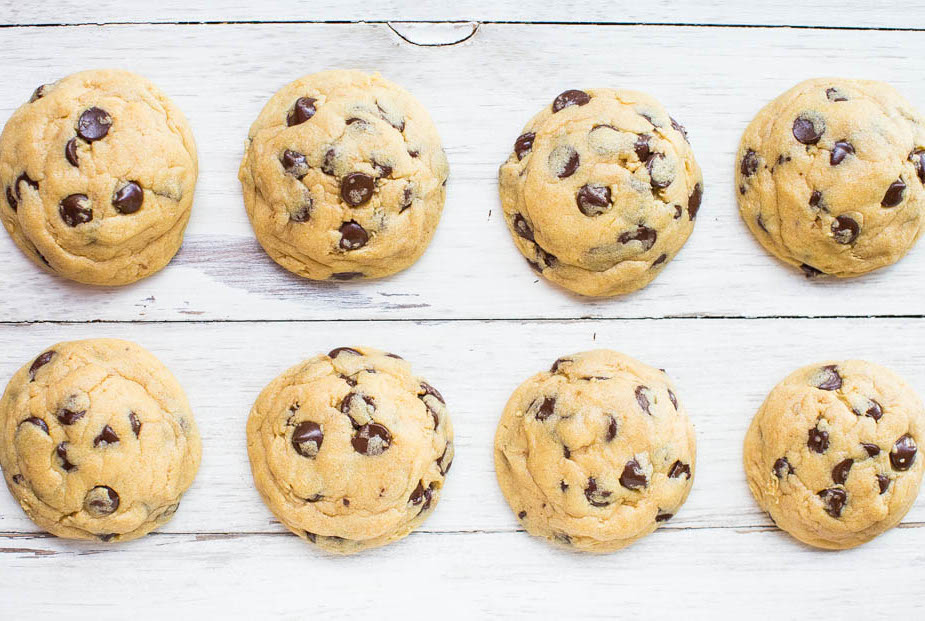

Chocolate Chip Cookie Recipe
This is my new favorite recipe for chocolate chip cookies. They’re soft, moist, buttery, and thick enough to sink your teeth into. There’s a hint of chewiness at the base and edges, and it’s just enough to balance the soft pillowy centers and give me what I want for my idea of the perfect chocolate chip cookie. The secret to these cookies is instant vanilla pudding mix and there’s no substitutions. The cookies are larger than some and the batch makes 14 cookies. About 11 minutes works perfectly for this size cookie, and if you alter the size of the cookie, you’ll need to alter the baking time. The dough must be chilled before baking so the cookies don’t spread and bake thin and flat.
- Yield: 12 large cookies
- Total time: 3+ hours (including dough chilling time)
- Prep time: 15 minutes
- Cook time: 11-12 minutes for each batch
Ingredients:
- 3/4 cup unsalted butter, softened (1 1/2 sticks)
- 3/4 cup light brown sugar, packed
- 1/4 cup granulated sugar
- 1 large egg
- 1 teaspoon vanilla extract
- 2 cups all-purpose flour
- One 3.5-ounce packet instant vanilla pudding mix
- 1 teaspoon baking soda
- Pinch salt, optional and to taste
- One-12 ounce bag semi-sweet chocolate chips
Directions:
- To the bowl of a stand mixer fitted with the paddle attachment (or large mixing bowl and electric mixer) combine the butter, sugars, egg, vanilla, and beat on medium-high speed until creamed and well combined, about 4 minutes.
- Stop, scrape down the sides of the bowl, and add the flour, pudding mix, baking soda, optional salt, and beat on low speed until just combined, about 1 minute.
- Stop, scrape down the sides of the bowl, and add the chocolate chips, and beat on low speed until just combined, about 30 seconds.
- Using a large cookie scoop, 1/4-cup measure, or your hands, form approximately 14 equal-sized mounds of dough, roll into balls, and flatten slightly. Tip - Strategically place a few chocolate chips right on top of each mound of dough by taking chips from the underside and adding them on top.
- Place mounds on a large plate or tray, cover with plasticwrap, and refrigerate for at least 2 hours, up to 5 days. Do not bake with unchilled dough because cookies will bake thinner, flatter, and be more prone to spreading.
- Preheat oven to 350F, line a baking sheet with a Silpat or spray with cooking spray. Place dough mounds on baking sheet, spaced at least 2 inches apart (I bake 8 cookies per sheet) and bake for about 11 minutes, or until edges have set and tops are just set, even if slightly undercooked, pale, and glossy in the center; don't overbake. Cookies firm up as they cool. Allow cookies to cool on baking sheet for about 10 minutes before serving. I let them cool on the baking sheet and don't use a rack.
- Cookies will keep airtight at room temperature for up to 1 week or in the freezer for up to 6 months. Alternatively, unbaked cookie dough can be stored in an airtight container in the refrigerator for up to 5 days, or in the freezer for up to 4 months, so consider baking only as many cookies as desired and save the remaining dough to be baked in the future when desired.